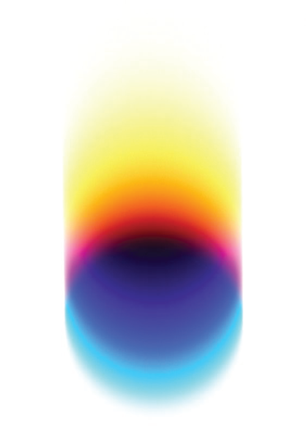
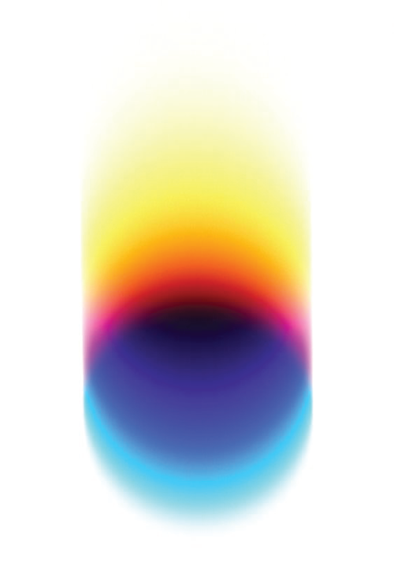

Check out the latest graphic design industry news, along with boundary-pushing work and new campaigns. This includes tips and tricks regarding typography, color, and branding.


 

I am proud to call myself a designer. As a child I was always fascinated by art. By age three, I could hold a paint brush. As many kids played with blocks or dolls, I was doodling, drawing, or sketching. As I grew my passion for art transformed into something more meaningful. I managed to take on any creative project thrown my way. I was determined to learn as many skills and techniques in the art realm as I could. One thing introduced was digital design. Seeing where the world was heading into complete digitalization, I knew this would be the right path for me to follow as college was approaching. Design allows me to express myself in ways other than words. It is a form of communication, a language, meant to communicate expressions through visuals. With design comes no rules or limits. It’s about innovating, thinking outside of the box, and being your own unique self.